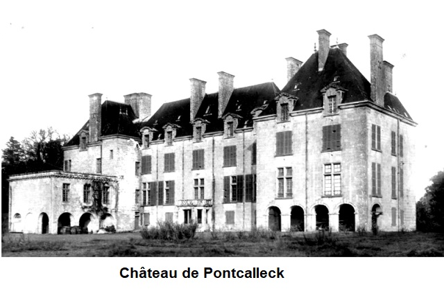
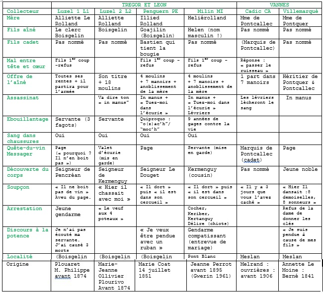

An Itron Ponker
Madame de Pontquer
The Lady Pontquer
Chant collecté par Théodore Hersart de La Villemarquédans le 2ème Carnet de Keransquer (pp. 161 - 165) .


| 1° "Tour an Arvor" publiée dans "Barzhaz Breizh de 1845" de La Villemarqué |
|
| 2° "La dame de Pontcallec" publiée dans "Paroisse Bretonne " de l'Abbé François Cadic |
|
| 3° "Alliet ar Rolland (Trégor)" publiée dans "Musiques bretonnes de M. Duhamel" |
|
| 4° "Alliet ar Rolland (Hte Cornouaille)" publiée dans "Musiques bretonnes de M. Duhamel" |
|
| 5° "Aliet Rolland" publiée dans "Carnets de Y-F. Kemener" |
|
| 6° "Añriet Rolland" publiée dans "Carnets de route d' Ifig Le Troadec |
|
A propos de la mélodie: On trouvera ci-dessus des mélodies dont celles qui portent les N° 3 et 4 ont été notées par Maurice Duhamel et publiées dans "Musique bretonnes", P.79, sous les N° 156 et 157 (Trégor et Haute Cornouaille). Elles sont réputéées accompagner les 2 versions (L1 et L2) de la présente gwerz publiées dans l'ouvrage de F-M. Luzel. Les mélodies N° 2, 5 et 6 ont été publiées avec les textes (CA, KE & TR) respectivement par l'Abbé F. Cadic et les folkloristes Y-F. Kemener et I. Le Troadec. Les mélodies 2, 5 et 6 comprennent 3 phrases musicales, la 2 par répétition du 1er vers, la 5 et la 6 par répétition du 2ème vers. Le mélodies 3 et 4 comprennent 4 phrases et conjuguent 2 distiques. La mélodie 1 pourrait être du même type. Ce n'est cependant pas ce que suggère le manuscrit. La mélodie N°1 est celle qui accompagne La Tour d'Armor dans le Barzhaz de 1845. En se reportant à ce chant on verra qu'une de ses caractéristiques est décrite ainsi par La Villemarqué: "Cette légende doit être très ancienne car elle a la forme rythmique de certaines pièces de Llywarch Hen, barde gallois du 6ème siècle, forme que n'offre, à ma connaissance, aucun autre poème armoricain. (?) La strophe qui est de quatre vers octosyllabiques, rimant deux par deux, présente régulièrement à la fin du premier vers deux pieds de surérogation sans rime. Tout dans cette pièce, costumes, mœurs et usages, la langue même, çà et là, offre un caractère d'antiquité parfaitement en harmonie avec cette forme singulière." A la page XLII de l'édition 1867, où est donnée la partition, on remarque que le procédé se double d'une répétition des deux dernières syllabes du troisième vers ("Arvor, Arvor"). Le présent chant (LV) semble obéir à la même règle, si ce n'est que l'indication portée entre parenthèses (ter) invite, non pas à combiner 2 distiques qui se suivent, mais à chanter 3 fois au total le premier vers, puis le 2ème pour conclure. Le mot de "surérogation" "chetu" (cornouaillais pour "setu"= "voici") est le même pour les 2 strophes suivantes. Il réapparait ensuite sporadiquement, également sous la forme "setu-hont" ("voilà"). Bien que La Villemarqué invoque à propos de "La Tour d'Armor" le nom de Llywarch-Hen, barde gallois du 6ème siècle, on peut imaginer, qu'il se soit inspiré, outre ce prestigieux modèle, de la présente gwerz (LV) pour composer son poème religieux à partir d'une source qui reste inconnue (peut-être un conte...) On peut également supposer que c'est au présent chant qu'il a emprunté la prenante mélodie de la "Tour d'Arvor". A propos du texte Il s'agit d'un chant connu, dès avant la publication deu carnet N° 2, repéré dans la classification Malrieu sous le numéro M-00205, et le titre breton "Ar mab henañ lazhet gant ar vamm" (Le fils aîné tué par la mère). Le site https://tob.kan.bzh/chant-00205.html en synthétise ainsi l'argument: "Alliette Roland (L1, L2, PE, MI, KE, TR ) a tué son fils aîné pour faire seigneur le plus jeune. Armée de son grand couteau, elle demandait à son fils Boisgelin (L1, L2, PE, KE) : – « Où est le mal dont vous souffrez ? ». – « Entre ma tête et mon cœur j’éprouve une douleur déraisonnable » (L1, CA) . – « J’ai ici un remède pour guérir votre mal » (L1). – « Mon frère, laisse-moi la vie, je te donnerai toutes mes rentes ».(L1, PE, CA, LV). Alliette redescend, le sang jaillissant de ses chaussures (L2, PE, MI), face à la réprobation de sa servante (L1, PE, MI, TR) et de son page (L1, PE, KE, LV) à qui elle commande d’aller chercher du vin (L1, PE, MI, CA, KE, LV) pour son maître Boisgelin. Le seigneur de Pencréan (L1) arrive et demande Boisgelin. Le frère assassin essaie de lui faire croire qu’il est malade (L1, L2, KE). Arrive un archer (L1) pour prendre Alliette Rolland. – « Si j’avais écouté ma servante, j’aurais sauvé trois vies: celles de mes deux fils et la mienne » (L1, MI). Note : [de Luzel] : Boisgelin : château en Pléhédel. Comparaison entre versions : – Alliette Roland L1, L2, PE)= Helierolland (MI)= Madame de Pontquer (LV) = Madame de Pontcallec.(CA) (La table des chants établie par Mme de La Villemarqué accuse « Monsieur de Pontker »). – Boisgelin = "va c’henderv Helen" (MI, "mon cousin Hélène" pour le seigneur de Kermenguy). – Kermenguy (L2) = seigneur de Pencréan (L1) = Aotrou an Doujet.(PE) Versions et occurrences Ajoutons que ce site dénombre 14 versions et 24 occurrences. Compte tenu des redites et occurrences multiples et en ajoutant la présente version, ignorée par ce site, on peut désormais distinguer 8 versions principales: (cliquer sur la case "+" pour afficher les textes et leurs traductions françaises): A propos de ces variations, il convient de citer ces passages de "La nuit celtique" de Donatien Laurent et Michel Tréguer, p. 62-63: "Dans une tradition orale, fond et forme se confortent mutuellement pour produire un ... composé de sons et de sens qui se grave dans les mémoires... On ne voudrait pas s'en souvenir si le message déplaisait; et on ne pourrait pas s'en souvenir si le poème était mal tourné..." " La vérité est un souvenir commun à plusieurs hommes... Les [auditeurs] connaissent aussi bien la pièce que les [chanteurs]. Combien de fois ai-je entendu dans une soirée un participant protester... [que] pour lui 'ce n'était pas comme ça'. De nombreuses variantes finissent par coexister, mais il faut qu'elles s'imposent et recueillent l'accord de tous. Ainsi comprend-on mieux... la qualité de ces transmissions, tout à la fois assurées par certains et garanties par tous." "En général, le poème alterne des passages rigoureusement fixés et d'autres où il est presque permis d'improviser." On trouvera plus bas un tableau récapitulatif faisant ressortir cette dernière distinction, sachant que les 2 versions manquantes KE et TR ressemblent fort à la version PE tout en ayant leur physionomie propre. -TREGOR ET LEON: - VANNES: 6° La Villemarqué (LV): "Ann Itron Ponker", "Carnet de Keransquer N°2", p. 161-165, Annette Le Moine, avant 1845 à Nizon. auxquelles on peut ajouter 2 versions collectée récemment:
|
About the tune The above melodies include the tunes N° 3 and 4 that were recorded by Maurice Duhamel and published in "Musique bretonnes", P.79, under N ° 156 and 157 (Trégor and Upper Cornouaille). They are thought to accompany the 2 versions (L1 and L2) of this gwerz published in F-M. Luzel's collection. Melodies N ° 2, 5 and 6 were published with lyrics respectively by Abbé F. Cadic and the folklorists Y-F. Kemener and I. Le Troadec (CA, KE & TR). Melodies 2, 5 and 6 consist of 3 musical phrases, whereby in melody 2 the 1st line, in melodies 5 and 6 the 2nd line is repeated. Melodies 3 and 4 include 4 phrases and combine 2 stanzas. Melody 1 could be of the same type. However, this is not what the manuscript suggests. Melody N ° 1 is the vehicle of "La Tour d'Armor" in the 1845 Barzhaz. When referring to the comment to this song in this book we find one of its main features described as follows by La Villemarqué: "This ballad should be very old, since it has the rhythmic form of certain poems by Llywarch Hen, a 6th century Welsh bard, featuring to the best of my knowledge in no other Armorican poem (?). The stanza, made up of four octosyllabic lines, rhyming two by two, regularly presents at the end of the first verse a two feet non-rhyming extension. Everything in this piece, dresses, manners and customs, even language, here and there, offers an antique character thoroughly atune to this singular form. " On page XLII of the 1867 Barzhaz edition, where the music score is printed, we find that this structure implies a repetition of the last two syllables of the third line ("Arvor, Arvor"). The present song (LV) seems to obey the same rule, except that the indication in brackets, "(ter)"="thrice", prompts us, not to aggregate 2 contiguous distiches, but to sing 3 times in total the first line, followed by the 2nd line. The same additional word "chetu" (Quimper dialect for "setu" = "here") is used in the first 3 stanzas. It then pops up sporadically, also in the form "setu-hont" ("there"). Although La Villemarqué mentions the name Llywarch-Hen, a Welsh bard from the 6th century, in connection with "La Tour d'Armor", we may fancy that he was inspired, in addition to this prestigious model, by the present gwerz (LV ), even if he composed his religious poem from a source that remains unknown (maybe a tale ...) We may also assume that he borrowed from this ballad the catchy "Tour d'Arvor" melody. About the lyrics This ballad was well known, even before the publication of La Villemarqué's copybook N ° 2. In the Malrieu classification it has the number M-00205, and the Breton title "Ar mab henañ lazhet gant ar vamm" (The eldest son killed by his mother). The https://tob.kan.bzh/chant-00205.html site summarizes the argument as follows: "Alliette Roland (L1, L2, PE, MI, KE, TR) killed her elder son, to make of her younger son the rightful lord. Armed with her big knife, she asked her son Boisgelin (L1, L2, PE, KE): - "Where is your ailment?" " - "Between my head and my heart I suffer unbearable pain" (L1, CA). - "I have here a remedy to cure your ailment" (L1). - "My brother, spare my life, and you shall have all my rents" (L1, PE, CA, LV). Alliette comes downstairs, blood spurting from her shoes (L2, PE, MI), facing the reprobation of her maidservant (L1, PE, MI, TR) or her page (L1, PE, KE, LV) whom she orders to go and get wine (L1, PE, MI, CA, KE, LV for her/his master, the Lord Boisgelin. The Lord Pencréan (L1) arrives and asks to see Lord Boisgelin. The murderer brother tries to make him believe that he is sick (L1, L2, KE). An constable arrives (L1) and takes Alliette Rolland to prison. - "If I had listened to my maid, I would have saved three lives: those of my two sons and mine" (L1, MI). A note: [by Luzel]: Boisgelin is a castle near Pléhédel town. Comparison between individual versions: - Alliette Roland L1, L2, PE) = Helierolland (MI) = Madame de Pontquer (LV) = Madame de Pontcallec. (CA) (The "Song table" drawn up by Mme de La Villemarqué blames a “Monsieur de Pontker”). - Boisgelin = "va c’henderv Helen" (MI, "my cousin Hélène", here a male name for the victim who also is Lord Kermenguy's cousin). - Kermenguy (L2) = Lord Pencréan (L1) = Aotrou an Doujet.(PE). Versions and occurrences Let us add that this site counts 14 versions and 24 occurrences of the ballad at hand . Due to redundancies and multiple occurrences and taking into account the present version, unknown to the tob.kan.bzh site, we can now narrow down the list to a set of 8 main versions: (click the "+" box to display the lyrics with French translations): To characterize these variants, these excerpts from "La nuit celtique" by Donatien Laurent and Michel Tréguer, p. 62-63 seem especially relevant: "When conveyed by oral tradition, substance and form prop up each other, resulting in a ... compound of sounds and meanings that will remain engraved in our memories ... We would not want to remember it if the forwarded message did not please us; and we could not not remember it if the poem went wrong ... " "Truth is memory shared by several people ... The [audience] knows the sung piece every bit as well as the [singer]. How often did I hear in evening gatherings someone objecting ... [that] in their opinion, 'It was not the right way to sing it' . ”Many variants end up coexisting ultimately, but they have to prevail and gain everybody's agreement. Now we understand better ... the essential quality of this handed over heritage that is both ascertained by some and guaranteed by all. " "In the poem ther is usually an alternation of rigorously fixed passages and others where it is almost permissible to improvise." We will find below a summary table highlighting this last distinction, knowing that the 2 missing versions KE and TR are very similar to the PE version while having their own specificities. . -TREGUIER AND BREST AREA: 1 ° Luzel 1 (L1): "Alliett Ar Rolland" Gwerziou Breiz-Izel II, p. 272-277, Marguerite Philippe before 1874 at Pluzunet; 2 ° Luzel 2 (L2): "Alliett Ar Rolland" Gwerziou Breiz-Izel II, p. 278-283, Marie-Jeanne Ollivier (Abbé J-M. Le Pon collector). 3 ° De Penguern (PE): "Koajilin (Boisgelin)", MS 90, f ° 281v-284v, Marie Keriou née Koad, 14.07.1851 in Taulé; 4 ° G. Milin (MI): "Helierolland", Gwerin 1961, T. I, p. 63-66, Jeanne Perrot, before 1895 (Brest area); - VANNES AREA: 5 ° Abbé F. Cadic (CA): "La dame de Pontcallec", "Paroisse Bretonne de Paris" August 1906, anonymous, Melrand. 6 ° La Villemarqué (LV): "Ann Itron Ponker", "Carnet de Keransquer N ° 2", p. 161-165, Annette Le Moine, before 1845 in Nizon. and, in addition, 2 recently collected versions: 7 ° Yann-Fañch Kemener (KE): "Aliet Roland", "Carnets de route, 1996", p. 306-307, Françoise Méhat, 12.11.1982 in Laniscat, Vannes. 8 ° Ifig Le Troadec (TR): "Añriet Rolland", "Carnets de route 2005", p. 57, Léonie Lintanf, May 1980 in Plestin-les-Grèves, Tréguier. Table B of 1845-Barzhaz singers We knew that La Villemarqué had collected a song of this kind, because it is mentioned in the biography his son Pierre dedicated to him and first published in 1908, "La Villemarqué, sa vie et ses oeuvres". The following entry is found on p.66 of the 1926 edition: "'Marquis de Pont-calech and M. de Pontquer who kills his elder son to · vest his younger son with the elder's rights, sung by Annette Le Moine, from the parish Beusi (Bieuzy?),near Berné, in Vannes". This passage is accompanied by a note: (1) "Obvious counterfeit of the 'Death of the Marquis de Pontcalec', sung by a itinerant singer who had probably mixed two songs together, without understanding herself what she was singing." It is an excerpt from the "Table B" established by La Villemarqué's mother, a list of names to be quoted in the 2nd edition of Barzhaz, that of 1845. This Annette Le Moine of which we know nothing ( 2 villages Bieuzy do exist in the region, but are far off from Berné), is not credited with any other song. The lyrics indeed closely resemble that of a ballad published by Abbé Cadic in August 1906, collected at Melrand (not far from Bieuzy, about 12 km SE of Pontivy), in the Vannes dialect. A few plausible inferences From the fact that Mme de La Villemarqué knew this singer, we may infer: - Elegy begins on page 158 / 87, and continues on the next 2 pages. - on page 161 / 92, the second song begins with a new title, "An Itron Ponker" (Mme de Pontquer), which goes on, over pages 161 to 163, to conclude on the upper half page 164; - on page 164, a line marks the end of this 2nd song. It is followed by 8 lines which are the concluding stanzas of Elegy. However, due to the fact that half of these lines include numerous erasures and overloads, we may doubt that this is the end of a song recorded as it was sung and suspect in this addition a creation by the collector; |
 1° Luzel 1 (L1): "Alliett Ar Rolland" Gwerziou Breiz-Izel II, p. 272-277, Marguerite Philippe avant 1874 à Pluzunet;
1° Luzel 1 (L1): "Alliett Ar Rolland" Gwerziou Breiz-Izel II, p. 272-277, Marguerite Philippe avant 1874 à Pluzunet;|
BREZHONEK p. 161 1. An Itron Ponker he-doa graet – setu (ter) An Itron Ponker he-doa graet, An Itron Ponker he-doa graet, - doa graet Pezh biskoazh 'n itron n'he-doa graet. 2. Aet da lazhañ he mabig mat, - setu; 'Vit lakaat minour he bastard. 3. - Ma mabig mat, mar em c'harit, - setu, Hag ho preur-ko(z)hañ a lazhet? 4. - Larit "in manus" pa garit,- ma breur, Erru an eur ma 'varvefet - 5. Loskit-c'hwi ganin ma buhez, - ma breur, Breur, losk ganin-me ma buhez. 6. M'ho lakay minour er Ponker, ma breur, Ponkaleg ivez, mar be red. , 7. - Ha ma mamm graet din egaret, ma mamm, Rak ma breur-ko(z)an ne lazhen ket. 8. Di[ouzh] ar mem[ez] kalon ez omp deu[e]t, ma mamm, 'r mem[ez] kalon he-deus hon maget.- p. 162 / 93 9. 'N itron ar Ponker, pa glevas, setu-hont, He gontell 'n dorn e gemeras. 10. Da gaout he mab er zal a eas, a eas, E-kreiz e galon hen a plantas. 11. - Ah, pajig bihan, men ez out-te, pajig? Ha sav-ti buan-mat er pave! 12. Ha kerzh buan-mat da vourc'h Me(s)lan, Me(s)lan, Ha kerzh buan-mat da vourc'h Me(s)lan! 13. Da glask gwin d'ho mestr zo gwall glañv, setu-hont Me gred ema 'n e eur diwezhañ. - 14. Ha war an hent bras pa erruas, setu, Un denjentil yaouank a rekoñtras. 15. - Oh ! Pajig bihan, men e yez-te, pajig; Pa daoust ar mintin-man war vale? - 16. - Ez ean-me buan d'ar vourc'h Melan, Aotrou, Da glask gwin d'am mestr zo gwall glañv. - p. 163 / 94 17. - Ur gaou a larit 'n em zaoulagad, pajig Dec'h, m'am-boe eñ gwel[e]t 'n diwezhat, 18. - M'am-boe eñ gwelet da beder eur, pajig, Bale gant peder dimezell, Pevar re sonerien en o c'hador. 19. Ah, pajig bihan deuit-c'hwi d'ar ger, pajig, A ean d'ober ur dro d'ar maner, 20. - O, boñjour, demat deoc'h en ti-mañ, Itron, Men ema an aoutrou yaouank dre-mañ? 21. - Salokras, Aotrou, n'ouian ket, setu-hont, Pemzek deiz zo 'm-eus ket on gwelet. 22. - Ma Itron, roit din hoc'h alc'hwe[zi]où, Itron Me 'ean d'ober un dro d'ho kamproù, 23. - Ah, ma alc'hwe[zi]où, c'hwi n'ho-po ket, Aotrou, Ne ouian ket men emaint lakaet, 24. Ha ganin-me ema ma re, ma re Hag oc'h akuito e-lec'h ho re. p. 164 / 95 25. Hag ar gentañ dor a zigoras, setu-hont An aotrou yaouang eñ a welas, Hag eñ marv-mig ha yen-all e(ve)l sklas. 26. - Koñfort kalon oa bugale, gwezh-a-vez- Kañv e vamm, dre grougein, gwezh-a-vez - Me 'vo kroget a-goz d'am re. -. [suivi des str. 61-63 & 65 de "Pontkalek"] KLT gant Christian Souchon |
TRADUCTION FRANCAISE p. 161 1. Madame de Pontquer a fait – je sais, Madame de Pontquer a fait Madame de Pontquer a fait, - je sais, Ce que dame ne fit jamais. 2. Son fils légitime elle a tué - je sais, Que son bâtard puisse hériter.. 3. - Mon cher enfant, si vous m'aimiez - je sais, Votre frère ainé vous tueriez. 4. - Recommandez votre âme à Dieu! - mon frère Votre heure est venue, malheureux! - 5. - Ne me tuez pas, je vous prie, - mon frère, O mon frère, épargnez ma vie: 6. De Pontquer vous hériterez - mon frère Et, de Pontcallec, s'il vous plait. , 7. - Mère, en vain vous armez mon bras - ma mère C'est mon frère aîné. Il vivra. 8. Car une même chair nous fit - ma mère Un même sein nous a nourris.- p. 162 / 93 9. Madame de Pontquer alla - je crois, Se munir d'un grand coutelas. 10. Entre chez son fils et, sans peur, - horreur! Elle le lui plante en plein coeur. 11. - Petit page, où te caches-tu? - mon gars Un ouvrage urgent est échu: 12.. Va-t'en vite au bourg de Meslan - mon gars Vite, car ton maître est souffrant, 13. Tu rapporteras du vin blanc - vraiment Car il vit ses derniers instants. - 14. Marchant sur la grand' route, il vit - eh oui! Un jeune noble qui lui dit: 15. - Où vas-tu de ce pas, gamin, - eh bien! Où vas-tu de si bon matin? - 16. - Je dois rapporter de Meslan, - Seigneur, Du vin: mon maître est très souffrant! - p. 163 / 94 17. - Un mensonge! Je n'en crois rien - mon cher, Hier encore il allait bien! 18. - A quatre heures, il gambadait, - si fait, Quatre demoiselles dansaient, Tandis que huit sonneurs sonnaient. 19. Rentre chez toi. J'irai le voir, - ce soir, J'irai faire un tour au manoir. 20. - Bonjour, Dame de ce logis, - dit-il, Où se cache mon jeune ami? 21. - A vrai dire, je ne sais plus, - Seigneur: Quinze jours qu'on ne l'a plus vu! 22. - Madame, donnez-moi vos clés - si fait! Vos chambres je veux inspecter! 23. - Mes clés je ne puis vous donner, - Seigneur, Car je viens de les égarer. 24. J'ai ce jeu de clés: c'est le mien, - eh bien Des vôtres je n'ai nul besoin. p. 164 / 95 25. La première porte s'ouvrit - mais oui Le jeune homme était sur son lit Froid comme glace: il était mort. 26. - Quand on pend vos fils, quel chagrin! - parfois On me pend à cause des miens, Au lieu qu'ils soient mon réconfort. - [suivi des str. 61-63 & 65 de "Pontkalek"] Traduction C. Souchon (c) 2020 |
ENGLISH TRANSLATION p. 161 1. 1. Madame de Pontquer has done - I say Madame de Pontquer has done, Madame de Pontquer has done - has done An infamy matched by none. 2. Her legitimate son she killed: - I say , His place by her bastard be filled! 3. - My dear child, I would be so glad - I say, If your elder brother you'd stab. 4. - Time to pray "In manus tuas" - brother, The present hour will be your last! - 5. - Don't make an attempt on my life - brother, I entreat you to sheathe your knife. 6. I shall forfeit Pontquer to you - brother, And, if need be, Pontcallec, too. . 7. - Mother, you are misleading me - mother! My elder brother shall live. Surely! 8. Both of us are made of one flesh - mother. And we sucked milk from the same breast. . p. 162 / 93 9. Lady Pontquer, wild and dauntless, - alas! Upon these words seized a cutlass. 10. Entered the bedroom of her son - her son!! The next moment the crime was done. 11. - Little page, you shall come here and - my boy! Quick get ready for an errand! 12. Quick get ready for an errand! - listen You shall run to the town Meslan! 13. Bring wine for your master who's sick - my boy I think he is dying, be quick! - 14. He came across on the highway - that day A young nobleman who did say: 15. - Boy, tell me where you are going - tell me! And so early in the morning? - 16. - I must bring from Meslan town quick, - my Lord, Wine for my master who is sick. - p. 163 / 94 17. - This is a barefaced lie, I say - my boy For he was still fine yesterday! 18. Saw him at four in the evening, - my boy With four young ladies frolicking: Four pairs of pipers were playing. 19. Little page, now you shall go home - my boy. Round to the manor I will come. 20. - Good day to all in this mansion, - Lady Tell me where is the Lord, your son? 21. - With your leave, my Lord, I don't know, - I don't Saw him last a fortnight ago! 22. - Lady, will you give me your keys - Lady I'll have a look around here, please! 23. - My keys? I cannot give you them, - my Lord, I mislaid them I don't know when. 24.- But here I have a set of mine, - you'll see! I shall use them and they work fine. p. 164 / 95 25. The first door he opened in dread: - the first His friend was lying on his bed As cold as ice for he was dead. 26. - Children comfort your heart sometimes, - sometimes Sometimes they'll be hung for their crimes. I shall be hung because of mine! - [followed by str. 61-63 & 65 of song "Pontkalek"] Traduction C. Souchon (c) 2020 |
NOTE
|
[1] L'abbé François Cadic propose de dater cet événement entre 1657 et 1700. Persuadé qu'il faut rechercher l'infanticide de la gwerz dans la famille de Guer, il pense qu'il "s'agit ici de personnages qui résident à Pontcallec même, puisqe, après le meutre, nous voyons le fils cadet courir à Meslan, la paroisse voisine, chercher du vin pour son frère, afin de donner le change. Nous savons aussi, d'après les actes, que la terre de Pontcallec fut érigée en marquisat au profit d'Alain de Guer en 1657. Or la dame qui a commis le forfait est précisément qualifiée de marquise. Ne convient-il pas dès lors de reporter l'événement à l'intervalle de temps qui sépare cette année de l'année 1700, date à laquelle Clément-Chrysogone, l'héroïque Pontcallec...hérita des biens de son grand-père Alain?" Un correspondant du "Fureteur breton", De F. V., (1907, Tome II, n° 12, p.264, sujet N°104, indiquait que "Les archives de Berné ne permettent pas de reconstituer la généalogie des de Guer, marquis de Pontcallec de1671 à 1730: on n'y trouve ni mort ni baptème relatif à cette famille. En revanche, elles prouvent que si Pontcallec fut confisqué en 1720, il ne tarda pas à rentrer en possession de la famille du condamné de Nantes, car de 1730 à 1772, on y rencontre plusieurs fois mention de divers de Guer, marquis de Pontcallec." Ce correspondant répondait à l'invitation que lançait un autre contributeur, G.M., dans le "Fureteur" de 1906 (Tome II, n° 8, p. 87-88, sujet N° 104 intitulé "La Dame de Pontcallec" d'après "La Paroisse Bretonne" d'août 1906): "Quelqu'un... pourrait-il, au moyen de recherches faites, soit dans les archives de la paroisse de Berné où se trouvait le château de Pontcallec, soit ailleurs, reconstituer la généalogie exacte des Guer de Pontcallec avec les dates exactes de tous les décès de façon à préciser le fait qui a pu donner naissance à la légende transmise par la chanson en question. Les recherches se trouvent limitées entre 1667 [à corriger en 1657!] date de l'érection de la terre de Pontcallec en marquisat au profit d'Alain de Guer et 1720 ... où la terre du Pontcallec fut confisquée." Le seul élément qui puisse intriguer est que, d'après A. de la Borderie dans "Revue de Bretagne 1862, p. 128 (cité par "Infobretagne.com/berne-pont-callec-kallec.html"), "Charles-René de Guer, le 2ème marquis de Pontcallec épousa en 1678 Bonne-Louise Le Voyer. Il en eut six enfants,..1° Claude, l'aîné né en 1684..., le 1er mai 1699, mort avant son père. 2° Clément-Chrysogone [mort en 1720], 3° Henri-Marie qui suit. L'aîné, Claude, aurait été "détrôné" par son cadet, le décapité de Nantes. Sauf qu'"il ressort de l'acte de baptême.[de Clément] " qu'il naquit à Rennes le 24 novembre 1679" [et que] "Henri-Marie né également à Rennes le 17 juin 1681, était aussi plus âgé que Claude. D'ailleurs Claude n'est pas mort avant son père: le 6 novembre 1698 avait lieu à Berné le mariage de Marie-Gabrielle, l'aînée des filles. Le père y est porté comme décédé." Pourquoi La Borderie s'est-il trompé? Dans la version De Penguern, le fils cadet s'appelle Bastian. Or le frère cadet d'Alain de Guer, le père de Charles-René, s'appelait Sébastien-Jean et fut sénéchal de Vannes.S'il était le cadet de la gwerz, la mère indigne serait Jeanne de Kermeno du Garo, née en 1604.à Bignan. Mais l'histoire n'a rien retenu de tel à son sujet. |
[1] Father François Cadic proposes to date this event between 1657 and 1700. Convinced that we must look for the murdering mother of the ballad in the Guer family, he assumes that "these characters might live at Pontcallec manor, since, after the murder, we see the younger son running to Meslan, the neighbouring parish, looking for wine for his brother, in order to allay suspiscion. We also know from estate deeds that the land of Pontcallec was erected as a marquisate for the benefit of Alain de Guer in 1657. However, the lady who committed the crime is precisely described as a marquise. Shouldn't we therefore postpone the event to the time interval between 1657 and the year 1700 when Clément-Chrysogone, the heroic Marquis Pontcallec ... inherited the goods of his grandfather Alain? " A contributor to "Fureteur breton", De FV, (1907, Book II, n ° 12, p.264, topic N ° 104, indicated that "The archives of Berné town do not allow to reconstruct the genealogy of the marquis of Pontcallec: from 1671 to 1730:,no death or baptism in this family is recorded. But they prove that the Pontcallec estate confiscated in 1720, soon came back into possession of the family of the man condemned in Nantes, since, between 1730 and 1772, there are several mentions of members of the Guer family who are styled marquis of Pontcallec." This correspondent responded to the invitation sent by another contributor, GM, in the "Fureteur" of 1906 (Book II, n ° 8, p. 87-88, topic N ° 104 entitled "La Dame de Pontcallec", further to the publication of the gwerz in the August 1906 issue of "La Paroisse Bretonne"): "Coud someone ... elaborating on, either the archives of the Parish Berné to which the castle of Pontcallec belonged, or other documents, reconstruct the exact genealogy of the Guer de Pontcallec family, with the exact dates of all deaths, so as to identify the facts from which the legend transmitted by the song in question might have arisen. Research should be limited between 1667 [to be corrected in 1657!], date of the erection of the Pontcallec land as a marquisate for the benefit of Alain de Guer, and 1720 ... when the Pontcallec estate was forfeited. " The only puzzling thing is that, according to historian A. de la Borderie in "Revue de Bretagne 1862", p. 128 (cited by" Infobretagne.com/berne-pont-callec-kallec.html ")," Charles- René de Guer, 2nd Marquis of Pontcallec married in 1678 Bonne-Louise Le Voyer. They had six children, 1 ° Claude, the eldest son, born in 1684 ..., who died in 1699, before his father. 2 ° Clément-Chrysogone [died in 1720], 3 ° Henri-Marie. The eldest son, Claude, would have been "dethroned" by his younger brother, the beheaded of Nantes". However, "it appears from [Clément's] baptism certificate that he was born in Rennes on November 24, 1679 [and that] Henri-Marie was also born in Rennes on June 17, 1681, both being older than Claude. Besides, Claude did not die before his father. On November 6, 1698, on the occasion of the marriage of Marie-Gabrielle, the eldest daughter, in Berné, the father is mentioned as deceased. " The question is: what had led La Borderie to this misrepresentation? In the De Penguern version, the younger son is called Bastian. Now Alain de Guer's younger brother, Charles-René's father, was called Sébastien-Jean and was seneschal of Vannes. If he was the younger son of the gwerz, the cruel mother was Jeanne de Kermeno du Garo, born in 1604. at Bignan. But history has retained nothing of the like against her. |

Suivi de - followed by :